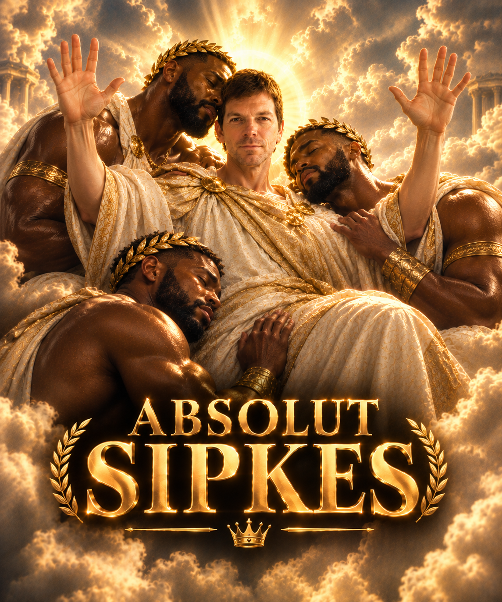

Joost Sipkes is een god die al leeft sinds het begin der tijden. Hij heeft het Sipkesdom opgericht, een religie ontstaan duizenden jaren geleden. Hij kon dat natuurlijk niet alleen, Daarom zette hij Bram Sipkes op deze aarde om zijn woorden te verspreiden. Er waren velen die in Bram geloofde, waardoor tot de dag van vandaag nog steeds miljoenen mensen in het Sipkesdom geloven. Hier, op HetSipkesWeb, kom je alles te weten over de legendarische Joost Sipkes en zijn volgers.
